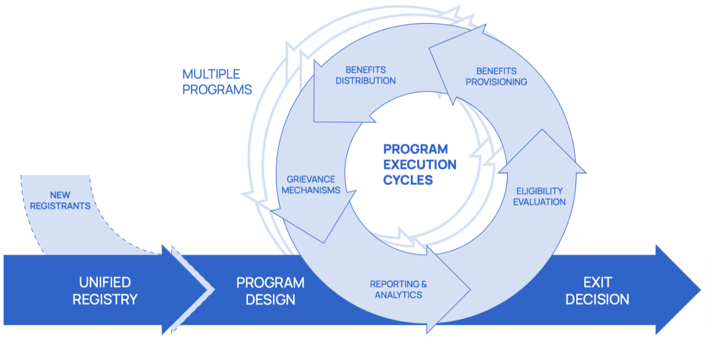
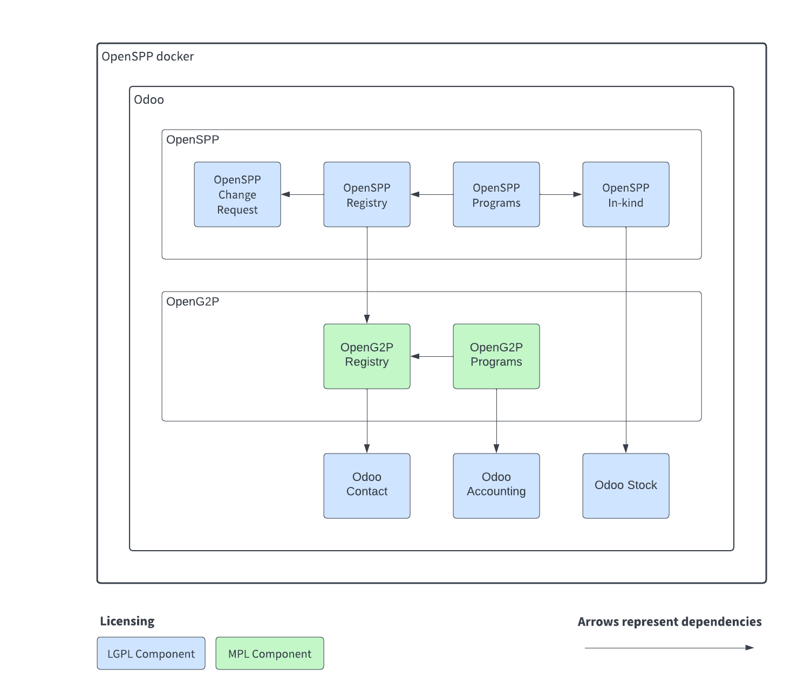

{kind=link}
OpenSPP - Social Protection Platform
OpenSPP is an open-source project that aims to streamline the management of social protection programs. It can be used on its own or in conjunction with other services.
OpenSPP is based on an open-source ERP called Odoo 15.0. It allows the project to take advantage of a vast ecosystem of existing integrations and modules.
It is a Digital Public Good (DPG) and it building on top of other DPG:s such as OpenG2P.
OpenSPP is currently in development, and everything is evolving rapidly thanks to the input provided by our users. If you have any questions or needs, please do not hesitate to contact the team through Github issues or the OpenSPP website.
Principles
OpenSPP is based on the following principles:
Design for the user: the project is designed to be easy to use and to meet the needs of the users in the field.
Focused on the needs of low to middle income countries: the project is designed to meet the needs of low to middle income countries.
Open source: the project is open source and free to use for any purpose, including commercial use.
Modular: the project is modular and can be used on its own or in conjunction with other services.
Technical information
OpenSPP is built on top of Odoo 15.0, a popular open-source ERP. It is designed to be easy to install and maintain, and can be run on any Linux distribution.
The project is currently under development, and everything is evolving rapidly as a result of our users’ comments. If you have any questions or needs, please do not hesitate to contact the team through Github issues or our Website.
To learn more, take a look at the Architecture pages.
Getting started with OpenSPP
- Installation
How to install this project on your server.
- Configuration
Project configuration and customization options.
Development
- Contributing
How to contribute changes to the project.
- Changelog
The project development changelog.